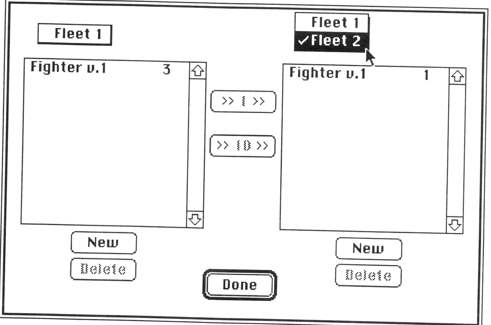

Organizing Fleets
Sometimes you may want to divide a fleet in pieces or put multiple fleets together. Any collection of fleets at a specific star can be organized in this fashion. To do so, select “Organize Fleets...” from the “Ships” menu.
The “Organize Fleets” dialog works a lot like the “Font/DA Mover,” so if you’ve used that you’re in good shape. Here’s the deal:
To create a new fleet, just click on the “New” Button under one of the ship columns. Select a ship, then use the arrow buttons to move it to a different fleet. You can choose the fleets by using the popup menus at the top of the ship list.
